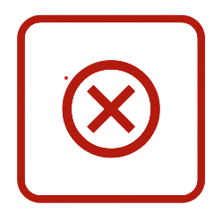

Cadastrado com sucesso
Você está inapto para doação no momento.
Intervalo mínimo entre doações não atingido.Próxima Disponibiliade
Recomendamos que você aguarde o período de descanso biológico. Sua saúde é nossa prioridade.


Doador Inapto
João Silva

Recomendamos que você aguarde o período de descanso biológico. Sua saúde é nossa prioridade.
O corpo necessita de tempo para repor os níveis de ferro e hemoglobina após uma doação. Respeitar esse prazo garante que sua doação seja segura tanto para você quanto para quem recebe.
Sua intenção de ajudar salva vidas.